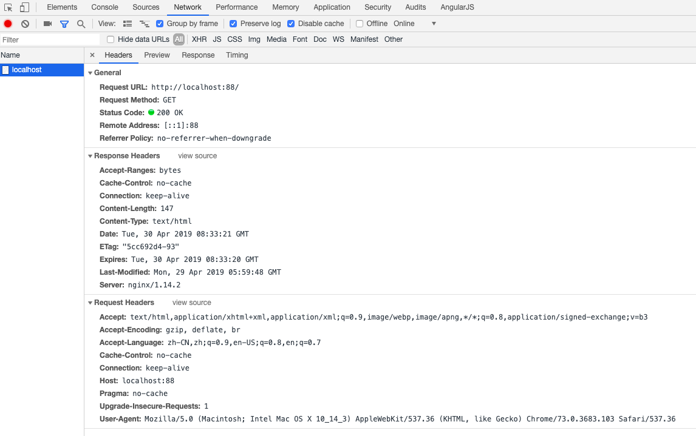

不管是作为后端还是前端开发人员，对于web请求的过程和参数都是需要了解的。
下面是对一次简单的http请求的header分析，作为自己的一个总结，也希望对大家有所帮助。
以Chrome为例：

我们对header的参数挨个分析
General
需要注意的地方：锚点（永远不会发到服务器端）
URI和URL的区别：URL是URI最常见的一种形式，URL的协议（http/https/ssh/ftp/wss/mailto）请求方法除了常见的GET，POST，PUT，DELETE，还包括如下：
HEAD：请求获取由Request-URI所标识的资源的响应消息报头
CONNECT：保留
OPTIONS：请求查询服务器的性能，或者查询与资源相关的选项和需求
TRACE：请求服务器回送收到的请求信息，主要用于测试或诊断参考：https://developer.mozilla.org/zh-CN/docs/Web/HTTP/Methods
状态码需要了解的大致如下：
1xx：服务器收到信息，等待请求者继续（100：contine，101:协议切换）
2xx：接受并操作成功（200，201:Created，202:Accepted-可能交给其它进程处理，203 Non-Authoritative Information，204:No Content，
205:Reset Content，206:Partial Content）
3**：重定向（300 Multiple Choice，301 Moved Permanently，302 Found，303 See Other，304 Not Modified，305 Use Proxy，
306 unused，307 Temporary Redirect，308 Permanent Redirect）
4xx：客户端错误（400 Bad Request-语义有错或参数错误，401 Unauthorized，402 Payment Required-备用，403 Forbidden-类似权限禁止，404 Not Found，
405 Method Not Allowed，406 Not Acceptable，407 Proxy Authentication Required，408 Request Timeout，409 Conflict，410 Gone，
411 Length Required，412 Precondition Failed，413 Payload Too Large，414 URI Too Long，415 Unsupported Media Type，
416 Requested Range Not Satisfiable，417 Expectation Failed，418 I'm a teapot-好玩，421 Misdirected Request，
422 Unprocessable Entity (WebDAV)，423 Locked (WebDAV)，424 Failed Dependency (WebDAV)，425 Too Early，
426 Upgrade Required，428 Precondition Required，429 Too Many Requests，431 Request Header Fields Too Large，
451 Unavailable For Legal Reasons）对于nginx自定义的状态码（499:客户端断开连接，大部分情况是服务器响应超时导致）
5xx：服务器错误（500 Internal Server Error，501 Not Implemented，502 Bad Gateway，503 Service Unavailable，504 Gateway Timeout，
505 HTTP Version Not Supported，506 Variant Also Negotiates，507 Insufficient Storage，508 Loop Detected (WebDAV)，
510 Not Extended，511 Network Authentication Required）参考：https://developer.mozilla.org/zh-CN/docs/Web/HTTP/Status
no-referrer
整个 Referer 首部会被移除。访问来源信息不随着请求一起发送。
no-referrer-when-downgrade （默认值）
在没有指定任何策略的情况下用户代理的默认行为。在同等安全级别的情况下，引用页面的地址会被发送(HTTPS->HTTPS)，但是在降级的情况下不会被发送 (HTTPS->HTTP)。
origin
在任何情况下，仅发送文件的源作为引用地址。例如 https://example.com/page.html 会将 https://example.com/ 作为引用地址。
origin-when-cross-origin
对于同源的请求，会发送完整的URL作为引用地址，但是对于非同源请求仅发送文件的源。
same-origin
对于同源的请求会发送引用地址，但是对于非同源请求则不发送引用地址信息。
strict-origin
在同等安全级别的情况下，发送文件的源作为引用地址(HTTPS->HTTPS)，但是在降级的情况下不会发送 (HTTPS->HTTP)。
strict-origin-when-cross-origin
对于同源的请求，会发送完整的URL作为引用地址；在同等安全级别的情况下，发送文件的源作为引用地址(HTTPS->HTTPS)；在降级的情况下不发送此首部 (HTTPS->HTTP)。
unsafe-url
无论是同源请求还是非同源请求，都发送完整的 URL（移除参数信息之后）作为引用地址。
接下来是Response Header
no-cache:强制确认缓存，也就是说向服务器确实是否有缓存（使用服务器端缓存则304）
no-store:禁止进行缓存
private:私有（同一用户）
public:共有
max-age:缓存过期机制（秒数）- 如果没有此参数则会检查expires属性，如果expires也没有，则检查last modified
must-revalidate：使用陈旧资源时必须向服务器验证（缓存驱逐了解下）
* 关于缓存，非常重要，详情可参考这里
close: HTTP1.0默认
keep-alive: HTTP1.1默认，持久连接 （对于keep-alive的信息，在服务器设置max和timeout，分别标示最大请求数，超时时间）
* 所谓长连接是指TCP连接会保持一定时间不关闭
结构：type/subtype;parameter=value，例如：text/plain;charset=UTF-8
分为两种：Discrete types和Multipart types
比较重要的类型如下：
application/octet-stream：默认二进制文件（未知），一般用作下载文件（和Content-Disposition:attachment一起用）
text/plain,text/css,text/html,text/javascript
multipart/form-data详情参考
接下来是Request Header
告知服务器客户端可以处理的类型
<MIME_type>/<MIME_subtype> 单一精确的 MIME 类型, 例如text/html.
<MIME_type>/* 一类 MIME 类型, 但是没有指明子类。 image/* 可以用来指代 image/png, image/svg, image/gif 以及任何其他的图片类型。
*/* 任意类型的 MIME 类型
;q= (q因子权重)
值代表优先顺序，用相对质量价值表示，又称作权重。
对应Response的Content-TypeAccept-Encoding: gzip, deflate, br （编码格式，一般是压缩类型，对应Response的Content-Encoding。用identity可以禁止压缩）
客户端可理解的自然语言和优先选择的区域
zh-CN是区域，zh是语言，;q是权重基本和Response中的Cache-Control对应
如下指定可禁止缓存：
Cache-Control: no-cache, no-store, must-revalidate用来让网络协议的对端来识别发起请求的用户代理软件的应用类型、操作系统、软件开发商以及版本号
web浏览器的格式一般如下：
Mozilla/<version> (<system-information>) <platform> (<platform-details>) <extensions>
详情参考